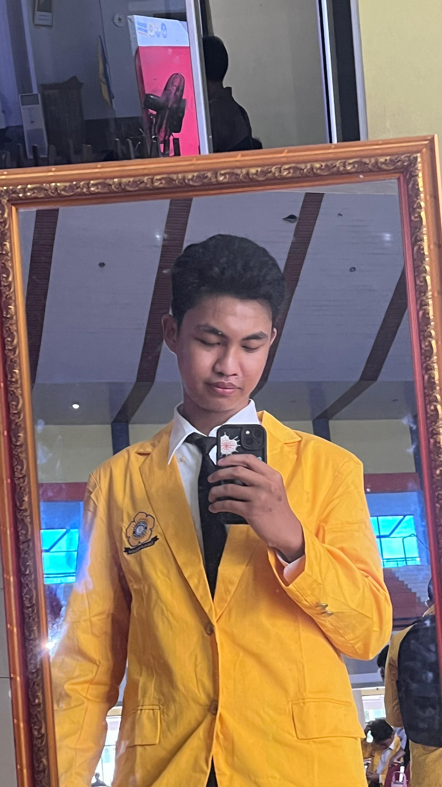

MENGENAL SAYA
Tentang Saya
Sedikit cerita mengenai diri saya, ketertarikan, dan proses belajar yang sedang saya jalani.

Nama Mahasiswa
Mahasiswa
TENTANG DIRI
Halo, Saya Seorang Mahasiswa
Saya adalah seorang mahasiswa yang memiliki ketertarikan pada dunia teknologi informasi, khususnya dalam bidang pemrograman dan pembuatan website.
Saat ini saya sedang mempelajari HTML, CSS, dan JavaScript untuk memahami bagaimana sebuah website dibuat mulai dari struktur, tampilan, hingga interaksi di dalamnya.
Saya senang mempelajari hal baru dan terus berusaha meningkatkan kemampuan melalui latihan dan berbagai tugas pemrograman.
Melalui website ini, saya mencoba menerapkan apa yang telah saya pelajari sekaligus memperkenalkan diri secara sederhana.
HAL YANG SAYA PELAJARI
Minat dan Pembelajaran
Web Development
Belajar membuat struktur dan tampilan website menggunakan HTML dan CSS.
Pemrograman
Mempelajari dasar logika pemrograman dan cara menyelesaikan sebuah masalah.
Belajar Teknologi
Terus mengembangkan pengetahuan dan kemampuan di bidang teknologi informasi.